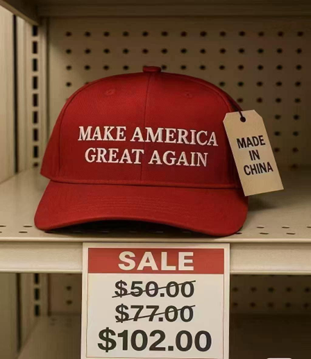
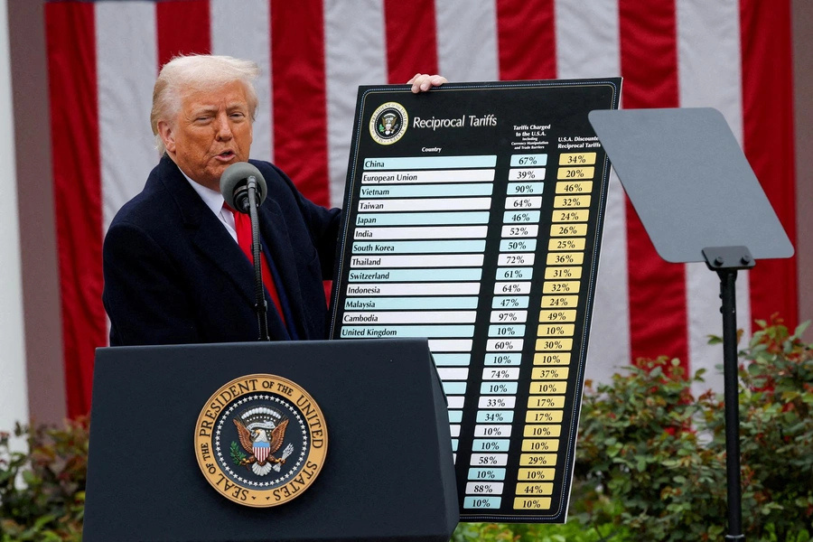

On 2 April 2025, the president of the US, Donald Trump, delivered a remarkable Liberation Day speech on global trade, announcing that imposing tariffs on the rest of the world would demolish free trade. The protectionist policies shocked the world and struck even US allies. Some countries already impose high tariff rates, but Trump's announcement reached striking levels: a 245% tariff on goods imported from China, mostly rare elements essential for high-industry production. Later, on 12 May 2025, Trump announced that the US and China had agreed to decrease tariffs to 55 percent for Chinese goods and 10 percent for US goods, though claims of agreement violations quickly surfaced. The central question is whether these policies can inflict deep damage on China or create new opportunities for regional trade expansion.
China can gain more than it can lose from the trade war and tariff uncertainty.
Opportunities for China in a Fragmented Trade Landscape
China is one of the largest trade partners of the US and holds a major share in both conventional and high-industry goods. Recent high tariff rates imposed on ASEAN countries present a strategic opening: China could increase regional trade and cooperation in Asia. An agreement between Japan and South Korea to increase trade and cooperation is particularly significant for China to maintain its regional standing and navigate global trade challenges. Strengthening these partnerships can enhance China's influence and economic stability, while fostering closer ties with neighboring countries creates investment opportunities and collaborative innovation in manufacturing and technology sectors.

Europe and the Russia-Ukraine Dividend
Europe represents another substantial opportunity for China. The European Union faces considerable tariff rates from the Trump administration, yet negotiation channels remain open. As trade friction with the US grows, Europe may seek alternatives to American goods. Chinese manufacturers like BYD can substitute for Tesla electric cars, and the political divergence between Washington and Brussels — over the Russia-Ukraine war and election interference — creates an opening. Additionally, these US-China tariff tensions deepen trade between China and Russia, a partnership already reinforced by US and European embargoes. Regional alternatives to American technology and goods strengthen as US protection rises.

The US Faces Long-Term Risks: Inflation and Productivity
Despite the apparent gains for China, the immediate trade deal (55% US tariffs on Chinese goods, 10% on US goods) does not resolve underlying pressures on the US economy. The main risks are twofold. First, tariffs will likely raise inflation: consumers will face higher prices in the market, and this effect will persist if expansionary monetary policy continues. Donald Trump's opposition to Federal Reserve Chair Powell's interest-rate policy — calling for rate cuts and expanded money supply — compounds the inflationary pressure. While M2 money supply has shown a decreasing trend since May 2025, the Federal Reserve has kept the Federal Funds Rate between 4.25–4.5%, a stance Trump opposes. This divergence between tariff pressure and monetary expansion could amplify inflation.
Second, tariffs may reduce competition in the short run — benefiting incumbent firms — but will erode productivity and innovation in the long run. According to Professor Ufuk Akçiğit, firm competition, measured by firm entry-exit data, is likely to decline in the US. Pola Lehmann documents that anti-growth policies are rising across G7 countries, of which the US is a member. As competition weakens, firms lose the pressure to innovate and improve efficiency, undermining the creative destruction process essential for sustained economic growth.
An Unstable Path Forward
The trade war carries significant unpredictability and internal contradictions. By maintaining aggressive and unpredictable trade policies, the US risks facing harmful outcomes over the long term — the very outcomes Trump intended to impose on China through tariffs. The durability of the tariff regime, the risk of further escalation, and the absence of a coherent long-term strategy create uncertainty for businesses, consumers, and investors. Whether the US can sustain competitive advantage while managing inflation and preserving productivity will determine whether this trade war becomes winnable or costly over time.
Selected references
- Aratani, L., & Smith, D. (2025, April 4). Trump announces sweeping new tariffs, upending decades of US trade policy. The Guardian.
- Parikh, T. (2025, June 15). The rising resistance to creative destruction. Financial Times.
- Reuters. (2025, March 30). South Korea, China, Japan agree to promote regional trade as Trump tariffs loom. Reuters.
- US-China trade deal is "done," Trump says. (2025).
- Zahn, M. (2025, May 30). Trump claims China "totally violated" trade agreement with US. ABC News.